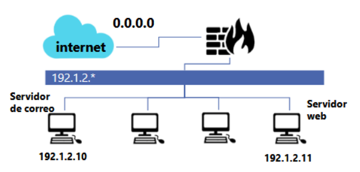

ACTIVIDAD 4 Mecanismos de Defensa en Red
Introduccion
Mediante la configuración de reglas específicas para tráfico entrante y saliente, se busca controlar servicios como DNS, HTTP y correo electrónico, permitiendo únicamente las comunicaciones autorizadas y bloqueando cualquier otro intento de acceso. Esta práctica permite comprender la importancia de una correcta segmentación y control del tráfico como parte de una estrategia integral de ciberseguridad en redes.
Actividad
1. Establecer una politica restrictiva
Iptables -A INPUT -j DROP
2. Permitir el tráfico de conexiones ya establecidas.
Iptables -A INPUT -p tcp -m state ESTABLISHED -j ACCEPT
3. Aceptar tráfico DNS (TCP) saliente de la red local.
iptables -A OUTPUT -p tcp –sports 53 -j ACCEPT
4. Aceptar correo entrante proveniente de Internet en el servidor de correo.
Iptables -A INPUT -p tcp -d 192.1.2.10 -s 0.0.0.0 -j ACCEPT
5. Permitir correo saliente a Internet desde el servidor de correo.
Iptables -A OUTPUT -p tcp -s 192.1.2.10 -d 0.0.0.0 -j ACCEPT
6. Aceptar conexiones HTTP desde Internet a nuestro servidor web
Iptables -A INPUT -p tcp –dports 80 -d 192.1.2.11 -s 0.0.0.0 -j ACCEPT
7. Permitir tráfico HTTP desde la red local a Internet
Iptables -A INPUT -p tcp -d 0.0.0.0 -j ACCEPT